If you are taking an official Safe Software training course, you can access FME Flow at http://localhost and log in with the user nameadminand the passwordFMElearnings.
After completing this lesson, you’ll be able to:
You have been tasked with creating a system to automatically generate a Google Earth KML file with a 3D visualization of recent earthquakes around the world, using data from the United States Geological Survey. You currently run the workspace manually everyday to get the results. Now, to save time, you're going to run it using FME Flow Automations on a schedule that triggers the workspace to run daily.
To create your new Automation, the first step is to log in to FME Flow.
After logging in, click Automations > Create Automation on the left-hand navigation menu:
If this is your first time building an Automation on this FME Flow, the Get Started box will appear. You can click Close, as we'll explore these steps ourselves right now.
You will see a new blank Automation canvas, with a starting Trigger that has yet to be configured.
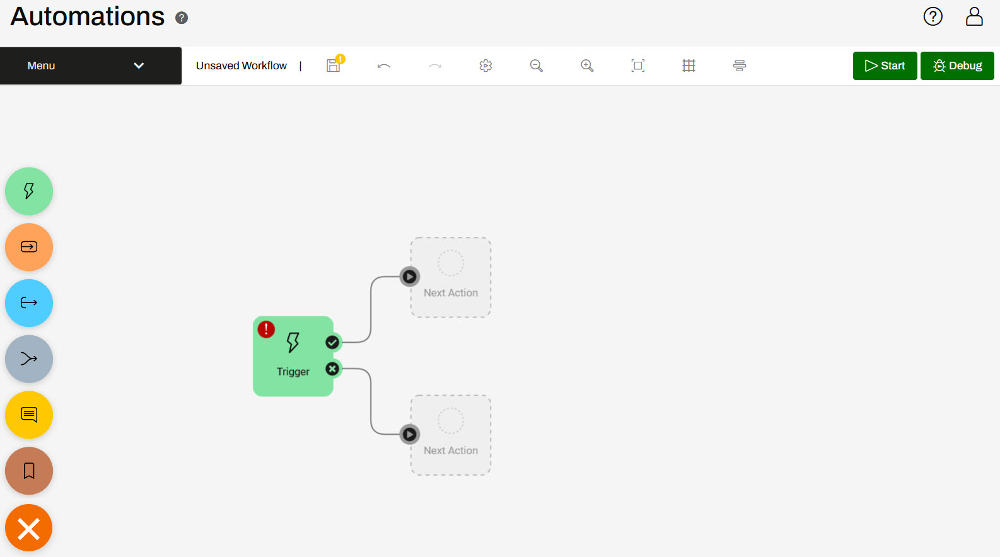
Clicking the button located on the bottom left of the canvas opens the component menu where you can click and drag components to add to your automation. Clicking the Next Action guide will also open an Action details pane on the left where you can select the action you'd like to use. Once you add multiple components to your automation, there will be a lot of Next Action guides so you may turn them off in Menu > Hide Guides.
Click the lightning bolt icon on the Trigger, then click Select a Trigger Event and choose FME Flow Schedule.
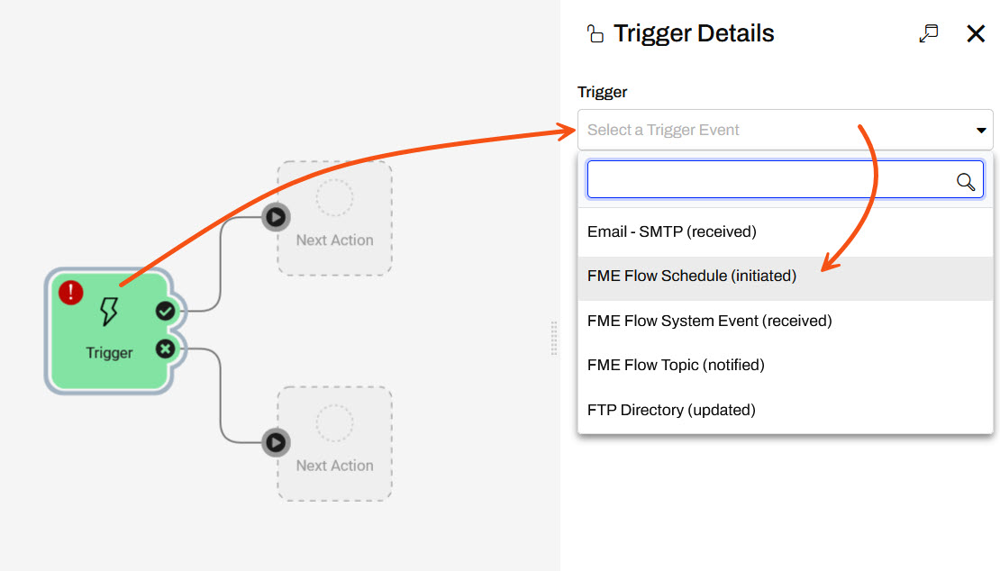
Set the Schedule Type to Repeat On Internal and have it repeat daily.
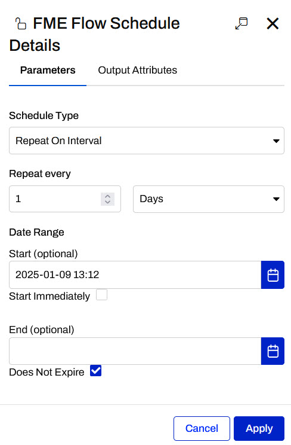
Click Apply. Your automation canvas will now have the Schedule trigger added to it.
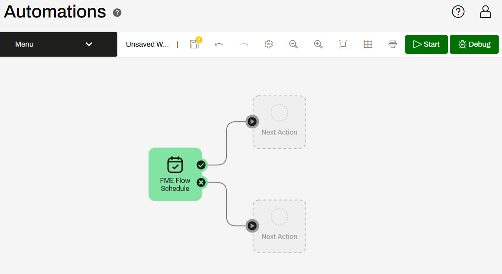
Click the circle icon above the top Next Action block attached to the Success port of the trigger. Then click Select an action and then choose Run a Workspace:
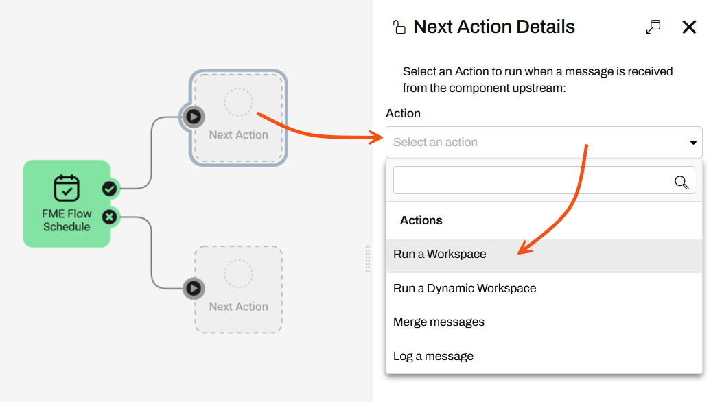
Select the Samples repository and the earthquakesextrusion.fmw workspace. You don't need to alter any other settings for this action so click Apply.
The earthquakeextrusion.fmw workspace action should now appear on the canvas.
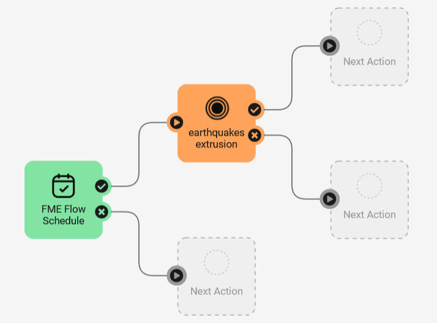
We now have a basic Automation that will run the earthquakeextrusion.fmw workspace when manually triggered. Before starting it, we need to save it. Click the Save icon in the top toolbar.

Name your workspace Earthquake Automation and click OK:
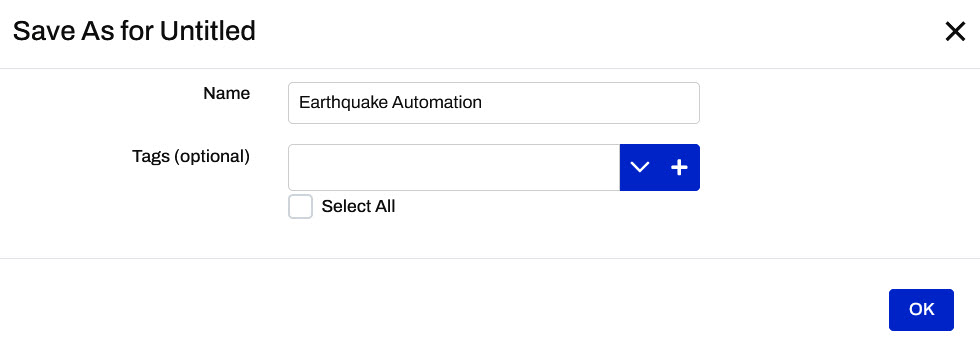
Now that the Automation has been saved, we have to start it. Click Debug to start the Automation in Debug Mode and click OK to accept the warning.
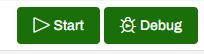
Your automation should now be running in Debug Mode.
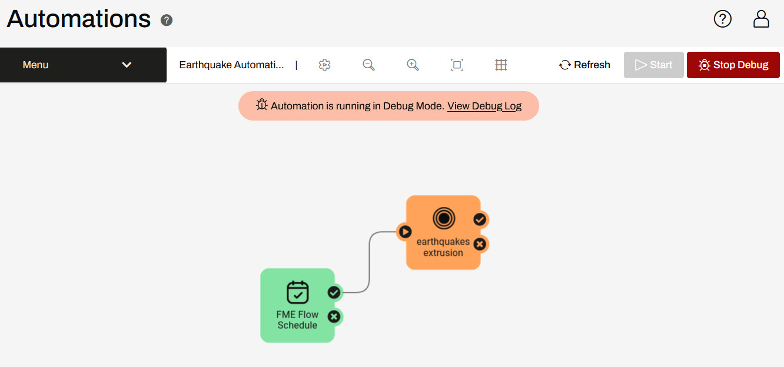
Debug Mode is useful creating and testing automations and is not recommended for automations running in a production environment. Logs of automations in Debug Mode are only available until the automation is restarted and logs are not saved with production automation logs in the FME Flow Resources.
After starting the Automation, you can no longer edit it. However, you can manually trigger the Automation to test it out rather than waiting until tomorrow for the schedule to trigger. Click the FME Flow Schedule Trigger icon and then click Trigger in the details panel.
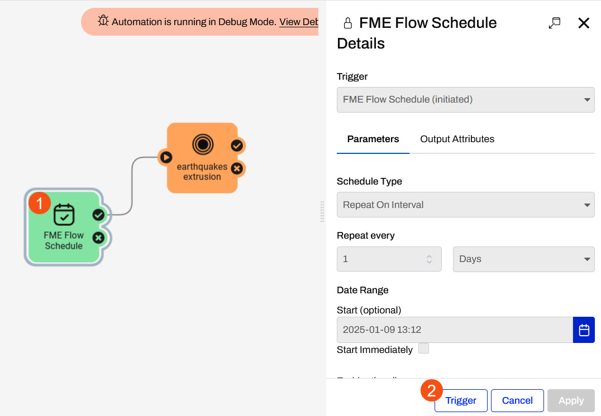
The Automation will run.
Click on View Debug Log from the Automations menu or from the Debug Mode Banner. You will see the Debug Log, which reports the Automation's activities. You should see a line that looks something like this:
2023-05-24T15:08:13-07:00 | 410160 : (Automations) Automation successfully triggered
A few more lines will report on the running job. If your Automation and workspace were configured properly, you should eventually see a line something like this:
2023-05-24T15:08:14-07:00 | 402623 : Job 23: Translation was successful.
Go back to the Automation and click Stop Debug. Click Start to start the Automation in Production Mode. Following the same instructions in Step 4, trigger the automation again.
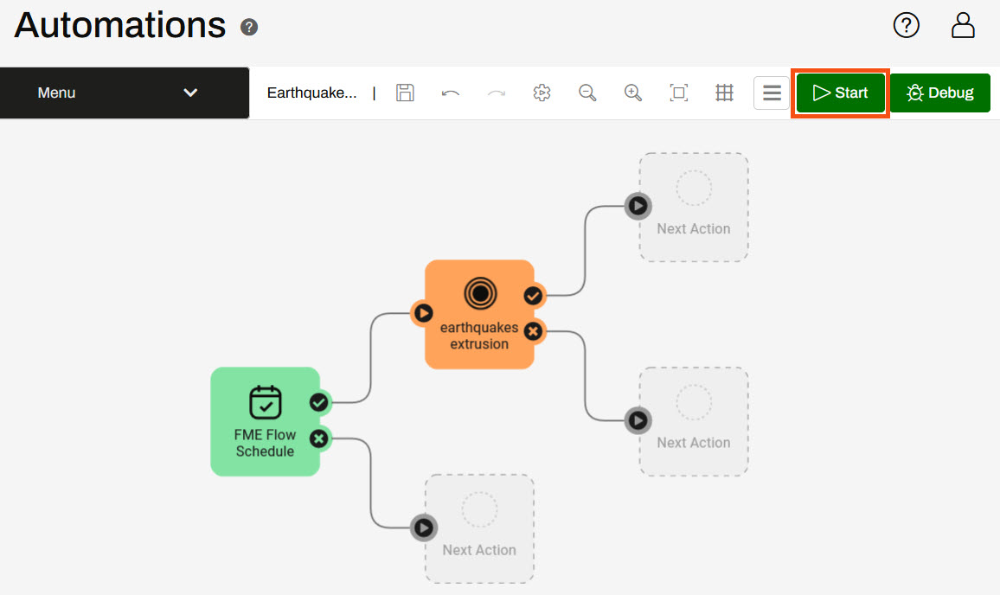
Automation logs are stored as files on FME Flow when run in Production mode, matching the file-based logging of other parts of FME Flow. You can read more in the documentation.
You can confirm the Automation was manually triggered by clicking the Menu, then View Log File:
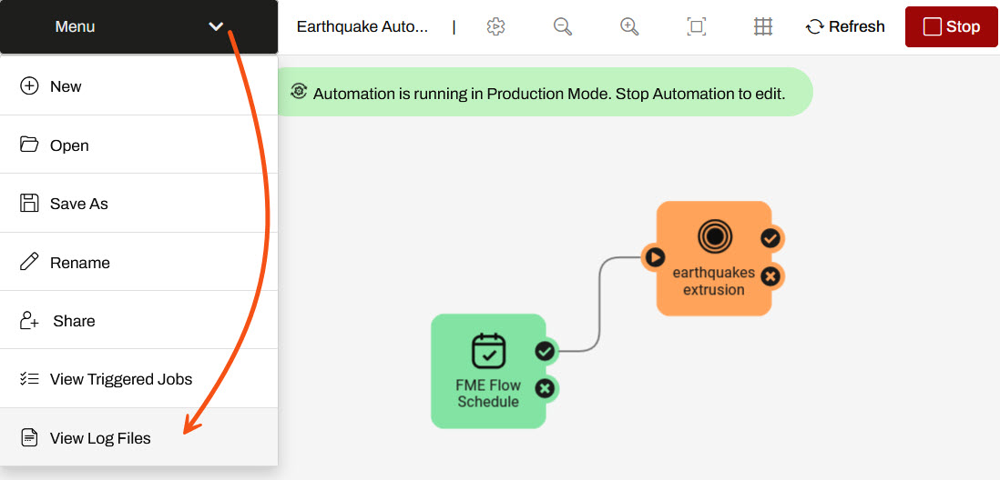
This will open up the Automations Log folder in the Resources folder. Click on the fmeautomations.log
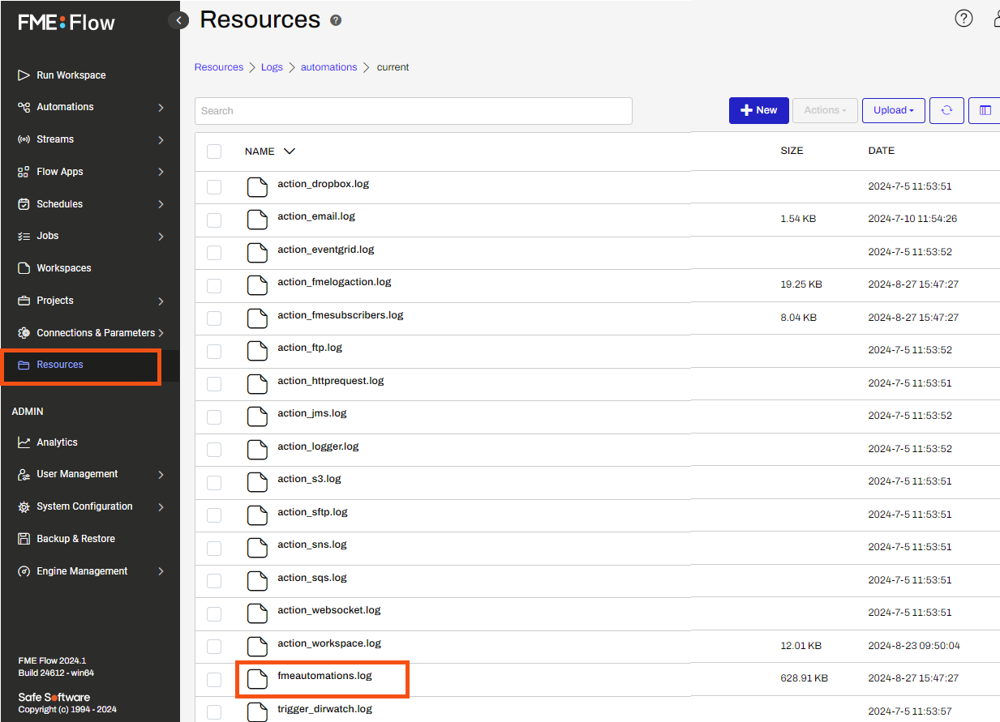
You will see the Automation Log, which reports the Automation's activities. You should see a couple of lines noting that the automation was triggered and the workspace translation was submitted.
10-Jan-2025 02:13:32.824 PM | INFORM | pool-6-thread-1 | Earthquake Automation (a03e1c18-32ab-45a4-a2ec-06fe736a01ff) | no-event | 410160 : (Automations) Automation successfully triggered
10-Jan-2025 02:13:33.816 PM | INFORM | requesthandler | Earthquake Automation (a03e1c18-32ab-45a4-a2ec-06fe736a01ff) | event (dfed7b22-5956-402f-bdbc-f7d02c073270) | 404610 : Job 42: Translation submitted
A few more lines will report on the running job. If your Automation and workspace were configured properly, you should eventually see a line stating the status of the translation.
10-Jan-2025 02:13:36.484 PM | INFORM | engine-localhost-localhost_Engine2 | Earthquake Automation (a03e1c18-32ab-45a4-a2ec-06fe736a01ff) | event (dfed7b22-5956-402f-bdbc-f7d02c073270) | 402623 : Job 42: Translation was successful.
This confirms that the automation was successfully triggered and the workspace completed successfully.
If you noticed your job failed, the USGS Earthquake API might be unavailable. Instead, you can try replacing the Source GeoJSON File or URL parameter in your Run Workspace Action with this example: example.geojson. If you are using a Safe Software training machine or downloaded FMEData, you can useC:\FMEData\Resources\CreateDataIntegrationApps\example.geojson.
You can browse or search through the Automation Log to find all the jobs triggered by an Automation. However, it can often be easier to view the list of triggered jobs directly. To do this, click your browser's back button to return to your Automation. Then click Menu > View Triggered Jobs:
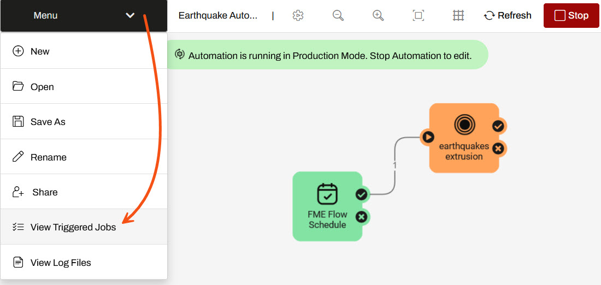
This will open the Completed Jobs page automatically filtered to only show Jobs triggered by this Automation. You should see the Job you manually triggered:
Congratulations! You successfully built a simple Automation that will run on a schedule and can also be manually triggered.